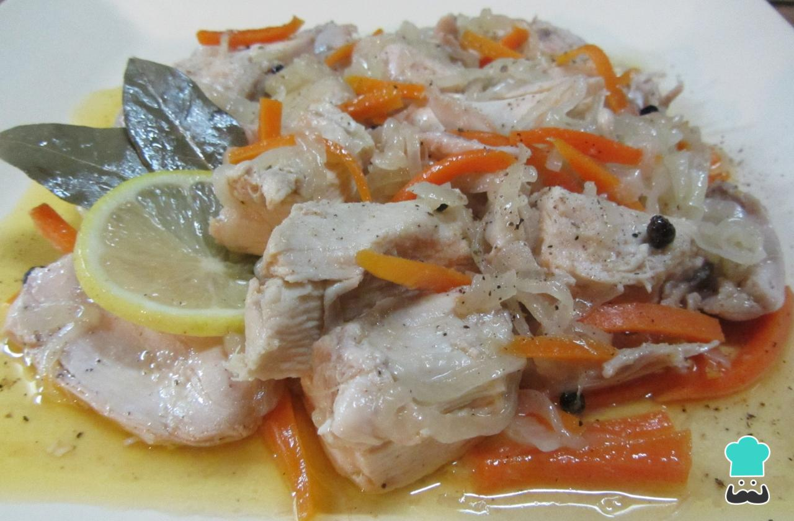

Pollo al escabeche

Comentarios:
Ingredientes:
- 2 piezas de pollo (muslo y pechuga).
- 2 cebollas.
- 1 zanahoria.
- 1 vaso de aceite.
- 1 vaso de vinagre blanco.
- 3 hojas de laurel.
- 2 dientes de ajo.
- Pimienta negra en grano.
- Una cucharadita de sal fina.
- 2 rodajas de limon.
Procedimiento:
- Coloca las piezas de pollo en una cacerola con agua y sal gruesa. Cocina la carne durante 15 minutos aproximadamente.
- Corta las cebollas en rodajas y resérvalas, corta las zanahorias en julianas y reservalas.
- En una olla vierte el aceite y el vinagre blanco junto con las cebollas y la zanahoria para comenzar a hacer la salsa escabeche. Agregar sal y pimienta y dejar cocinar a fuego lento.
- Una vez que se haya cocinado el pollo, retíralo del fuego, quítale la piel, deshuésalo y cortalo en trozos grandes.
- Coloca el pollo en la sarten, agrega los dientes de ajo, el laurel, las rodajas de limón, la pimienta en grano y sigue cocinando a fuego lento durante 20 minutos aproximadamente.
- Servir o guardar en conserva para que se concentre el sabor.
Se puede mantener en conserva unas dos semanas, siempre que se coloque en un frasco de vidrio esterilizado y hermético.
Para esterilizar los frascos hay que hervirlos en agua durante 15 minutos. Llénalos con la preparación, luego: